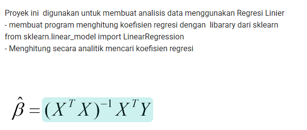
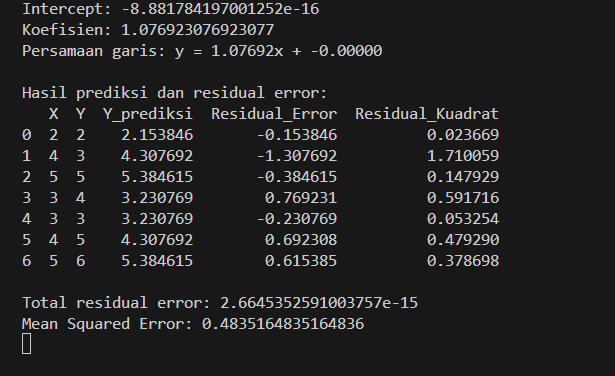
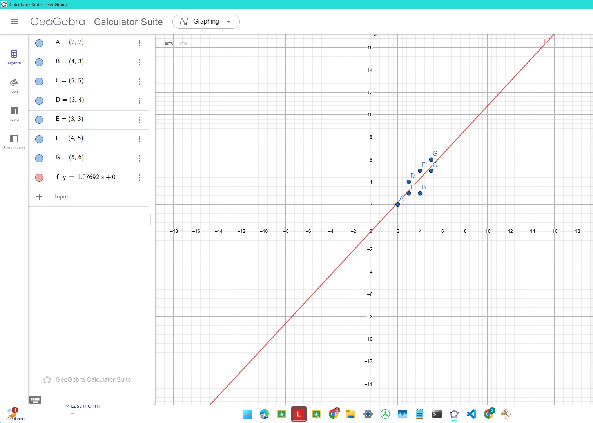
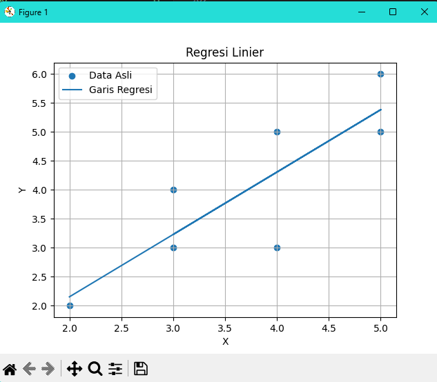

pertemuan13#
Analisis Data Menggunakan Regresi Linier#
1. Penjelasan Materi#
Regresi linier adalah metode analisis data yang digunakan untuk mengetahui hubungan antara variabel bebas X dan variabel terikat Y. Tujuan dari regresi linier adalah mencari garis terbaik yang dapat mewakili pola hubungan data.
Bentuk umum persamaan regresi linier sederhana adalah:
y = ax + b
Keterangan:
yadalah nilai hasil prediksi.xadalah nilai variabel input.aadalah koefisien regresi atau kemiringan garis.badalah intercept, yaitu nilaiysaatx = 0.
Pada proyek ini, regresi linier digunakan untuk mencari hubungan antara data X dan Y. Perhitungan dilakukan menggunakan library sklearn, yaitu LinearRegression, kemudian hasil prediksi dibandingkan dengan data asli untuk mendapatkan residual error.
Residual error adalah selisih antara nilai asli dan nilai hasil prediksi.
Residual Error = Y asli - Y prediksi
Semakin kecil nilai residual error, maka hasil prediksi semakin dekat dengan data asli.
Selain residual error, digunakan juga residual kuadrat dan Mean Squared Error atau MSE.
Residual Kuadrat = Residual Error^2
MSE = rata-rata dari Residual Kuadrat
MSE digunakan untuk mengetahui besar rata-rata kesalahan prediksi model regresi.
2. Tugas#
Proyek ini digunakan untuk membuat analisis data menggunakan Regresi Linier.

3. Data yang Digunakan#
Data yang digunakan adalah sebagai berikut:
| Titik | X | Y | ||:|:| | A | 2 | 2 | | B | 4 | 3 | | C | 5 | 5 | | D | 3 | 4 | | E | 3 | 3 | | F | 4 | 5 | | G | 5 | 6 |
Data tersebut kemudian dimasukkan ke dalam program Python menggunakan pandas.DataFrame.
4. Kode Program Python#
Catatan: Hasil yang digunakan pada laporan ini menghasilkan intercept mendekati 0 dan koefisien 1.07692. Agar hasil kode sama seperti output tersebut, model menggunakan
fit_intercept=False.
import pandas as pd
import matplotlib.pyplot as plt
from sklearn.linear_model import LinearRegression
# Data
data = pd.DataFrame({
"X": [2, 4, 5, 3, 3, 4, 5],
"Y": [2, 3, 5, 4, 3, 5, 6]
})
Y = data["Y"]
model = LinearRegression(fit_intercept=False)
model.fit(X, Y)
# Mengambil nilai intercept dan koefisien
intercept = model.intercept_
koefisien = model.coef_[0]
print("Intercept:", intercept)
print("Koefisien:", koefisien)
print(f"Persamaan garis: y = {koefisien:.5f}x + {intercept:.5f}")
# Mencari nilai prediksi Y
data["Y_prediksi"] = model.predict(X)
# Menghitung residual error
data["Residual_Error"] = data["Y"] - data["Y_prediksi"]
# Menghitung residual kuadrat
data["Residual_Kuadrat"] = data["Residual_Error"] ** 2
# Menghitung Mean Squared Error
mse = data["Residual_Kuadrat"].mean()
print("\nHasil prediksi dan residual error:")
print(data)
print("\nTotal residual error:", data["Residual_Error"].sum())
print("Mean Squared Error:", mse)
# Visualisasi dengan Matplotlib
plt.scatter(data["X"], data["Y"], label="Data Asli")
plt.plot(data["X"], data["Y_prediksi"], label="Garis Regresi")
plt.title("Regresi Linier")
plt.xlabel("X")
plt.ylabel("Y")
plt.legend()
plt.grid(True)
plt.show()
5. Penjelasan Kode Program#
5.1 Import Library#
import pandas as pd
import matplotlib.pyplot as plt
from sklearn.linear_model import LinearRegression
Penjelasan:
pandasdigunakan untuk membuat dan mengolah data dalam bentuk tabel.matplotlib.pyplotdigunakan untuk menampilkan grafik.LinearRegressiondigunakan untuk membuat model regresi linier.
5.2 Membuat Data#
data = pd.DataFrame({
"X": [2, 4, 5, 3, 3, 4, 5],
"Y": [2, 3, 5, 4, 3, 5, 6]
})
Kode tersebut digunakan untuk membuat data X dan Y dalam bentuk tabel.
5.3 Menentukan Variabel X dan Y#
X = data[["X"]]
Y = data["Y"]
X digunakan sebagai variabel bebas, sedangkan Y digunakan sebagai variabel target atau nilai yang akan diprediksi.
5.4 Membuat Model Regresi Linier#
model = LinearRegression(fit_intercept=False)
model.fit(X, Y)
Kode tersebut digunakan untuk membuat dan melatih model regresi linier.
Parameter fit_intercept=False digunakan agar garis regresi melewati titik origin (0, 0). Karena itu, nilai intercept yang dihasilkan sangat kecil dan mendekati nol.
5.5 Mengambil Intercept dan Koefisien#
intercept = model.intercept_
koefisien = model.coef_[0]
Kode tersebut digunakan untuk mengambil nilai intercept dan koefisien regresi.
5.6 Menghitung Nilai Prediksi#
data["Y_prediksi"] = model.predict(X)
Kode tersebut digunakan untuk menghitung nilai prediksi Y berdasarkan nilai X.
5.7 Menghitung Residual Error#
data["Residual_Error"] = data["Y"] - data["Y_prediksi"]
Residual error adalah selisih antara nilai asli dan nilai prediksi.
Jika residual error bernilai positif, berarti nilai asli lebih besar daripada nilai prediksi. Jika residual error bernilai negatif, berarti nilai asli lebih kecil daripada nilai prediksi.
5.8 Menghitung Residual Kuadrat#
data["Residual_Kuadrat"] = data["Residual_Error"] ** 2
Residual kuadrat digunakan agar nilai error negatif menjadi positif dan untuk mengetahui besar kesalahan prediksi.
5.9 Menghitung Mean Squared Error#
mse = data["Residual_Kuadrat"].mean()
MSE adalah rata-rata dari residual kuadrat. Nilai MSE digunakan untuk melihat rata-rata kesalahan prediksi model.
5.10 Menampilkan Grafik#
plt.scatter(data["X"], data["Y"], label="Data Asli")
plt.plot(data["X"], data["Y_prediksi"], label="Garis Regresi")
plt.scatter() digunakan untuk menampilkan titik data asli, sedangkan plt.plot() digunakan untuk menampilkan garis regresi.
6. Hasil Output Program#
Hasil output dari program adalah sebagai berikut:

Intercept: -8.881784197001252e-16
Koefisien: 1.076923076923077
Persamaan garis: y = 1.07692x + -0.00000
Hasil prediksi dan residual error:
X Y Y_prediksi Residual_Error Residual_Kuadrat
0 2 2 2.153846 -0.153846 0.023669
1 4 3 4.307692 -1.307692 1.710059
2 5 5 5.384615 -0.384615 0.147929
3 3 4 3.230769 0.769231 0.591716
4 3 3 3.230769 -0.230769 0.053254
5 4 5 4.307692 0.692308 0.479290
6 5 6 5.384615 0.615385 0.378698
Total residual error: 2.6645352591003757e-15
Mean Squared Error: 0.4835164835164836
7. Pembahasan Hasil#
Berdasarkan output program, diperoleh nilai:
Intercept = -8.881784197001252e-16
Koefisien = 1.076923076923077
Nilai intercept tersebut sangat kecil dan mendekati nol. Dalam penulisan sederhana, nilai tersebut dapat dianggap sebagai 0.
Maka persamaan garis regresinya adalah:
y = 1.07692x + 0
atau dapat ditulis:
y = 1.07692x
Artinya, setiap nilai X naik 1 satuan, maka nilai prediksi Y akan naik sekitar 1.07692 satuan.
Nilai residual error menunjukkan selisih antara data asli dan hasil prediksi. Contohnya, pada data pertama:
X = 2
Y asli = 2
Y prediksi = 2.153846
Residual Error = 2 - 2.153846 = -0.153846
Nilai residual error negatif berarti hasil prediksi lebih besar daripada nilai asli.
Nilai Mean Squared Error yang diperoleh adalah:
MSE = 0.4835164835164836
Nilai tersebut menunjukkan rata-rata kesalahan kuadrat dari hasil prediksi model regresi linier.
8. Visualisasi Grafik#
8.1 Menggunakan GeoGebra#

8.2 Menggunakan Matplotlib#

Grafik regresi linier menampilkan titik data asli dan garis regresi. Titik data asli ditampilkan sebagai titik-titik pada grafik, sedangkan garis regresi menunjukkan hasil prediksi dari model.
Pada grafik, terlihat bahwa garis regresi mengikuti pola naik dari data. Semakin besar nilai X, maka nilai Y juga cenderung meningkat.
9. Kesimpulan#
Berdasarkan hasil analisis regresi linier, diperoleh persamaan garis:
y = 1.07692x
Model regresi linier berhasil digunakan untuk menghitung koefisien regresi, nilai prediksi, residual error, residual kuadrat, dan Mean Squared Error.
Hasil residual error menunjukkan perbedaan antara nilai asli dan nilai prediksi. Sementara itu, nilai MSE sebesar 0.4835164835164836 menunjukkan rata-rata kesalahan kuadrat dari model regresi.
Dengan demikian, program ini sudah sesuai dengan tujuan proyek, yaitu melakukan analisis data menggunakan regresi linier dengan bantuan library sklearn dan menampilkan hasilnya menggunakan matplotlib.